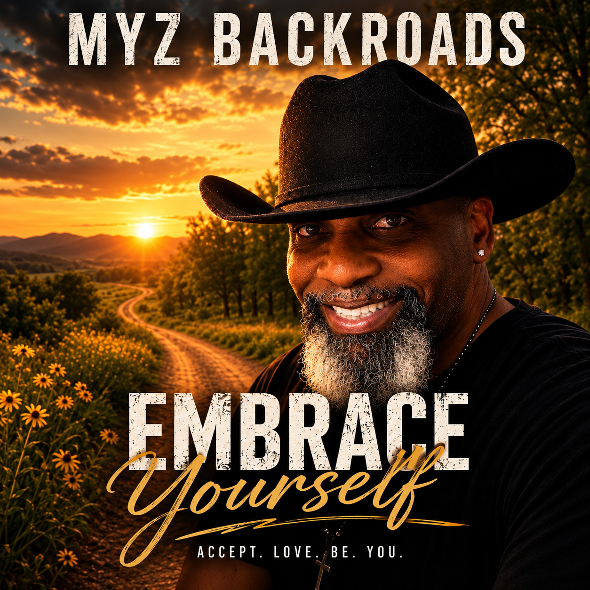
Upcoming single
Embrace Yourself
A song about self-acceptance, belonging, and standing comfortably in your own life.
Veteran • Songwriter • Storyteller
Country, country-soul, gospel, and Americana songs shaped by faith, recovery, hard roads, and the strength to keep moving forward.
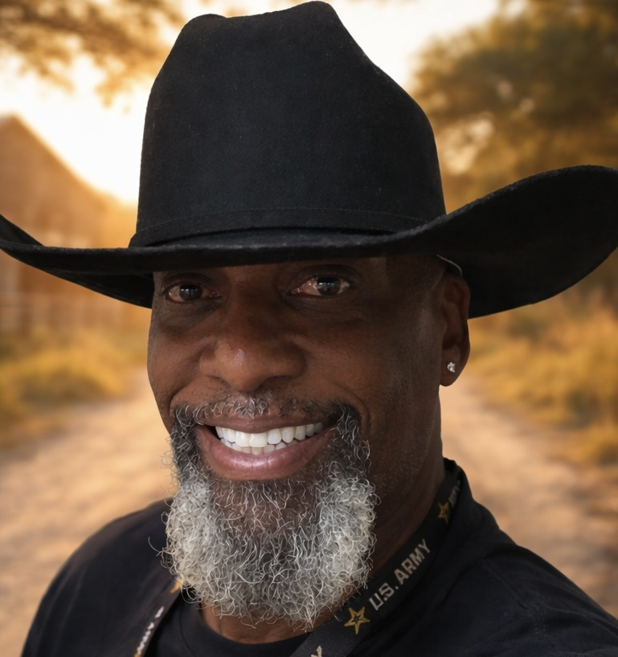
United States Army Veteran
Songwriter • Storyteller
Real stories. Real struggles.
Real hope.
Meet Michael Maraia
Michael Maraia is a United States Army veteran, singer, and songwriter behind MyZ Backroads. His music is rooted in lived experience—survival, recovery, faith, loneliness, courage, and the choice to keep going.
Every song begins with a real feeling or a real chapter. Some are heavy. Some are hopeful. All of them are honest.
“The backroads are where the noise fades, the truth gets louder, and the next chapter begins.”Booking and contact →
Music
A growing catalog of country, gospel, soul, and Americana built around real stories and emotional truth.

A song about self-acceptance, belonging, and standing comfortably in your own life.
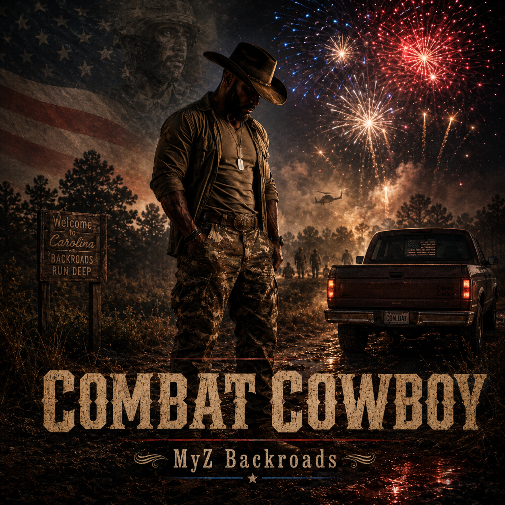
A country story of service, memory, strength, and what follows a soldier home.
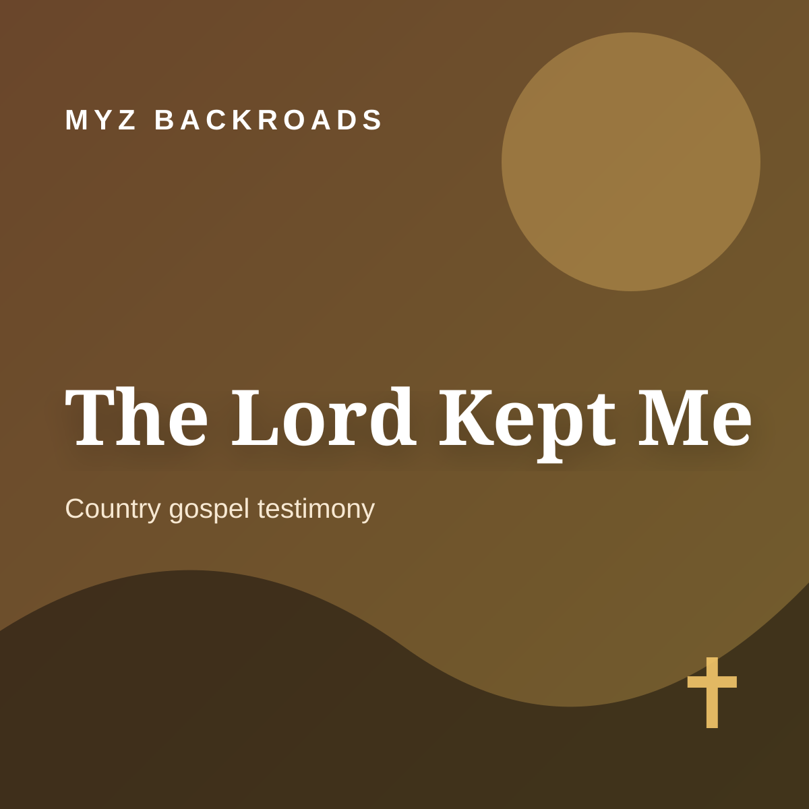
A testimony about surviving the hardest chapters and recognizing the grace that carried you.
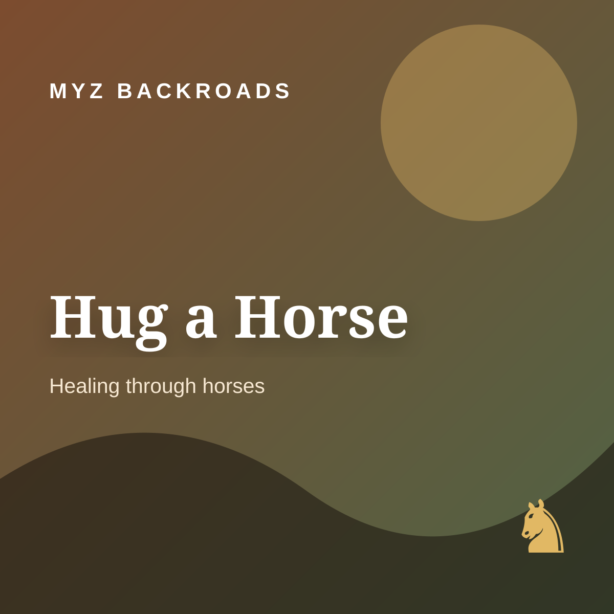
A tribute to the quiet healing, trust, and peace found through horses.
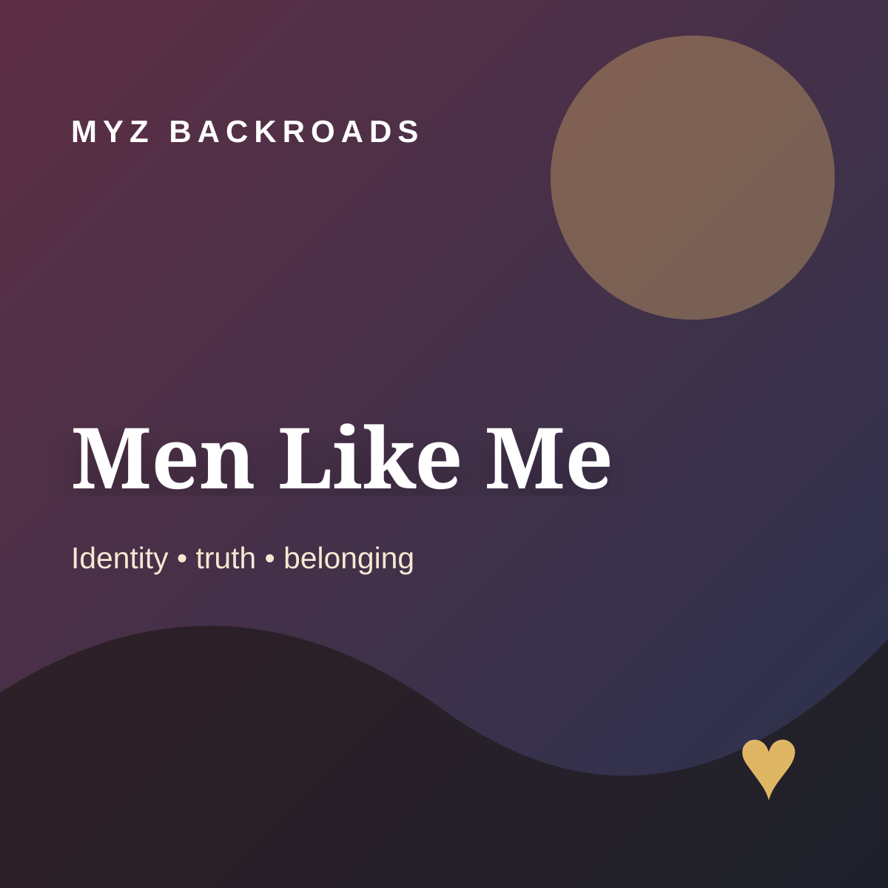
A heartfelt song about honesty, identity, and the courage to be seen.
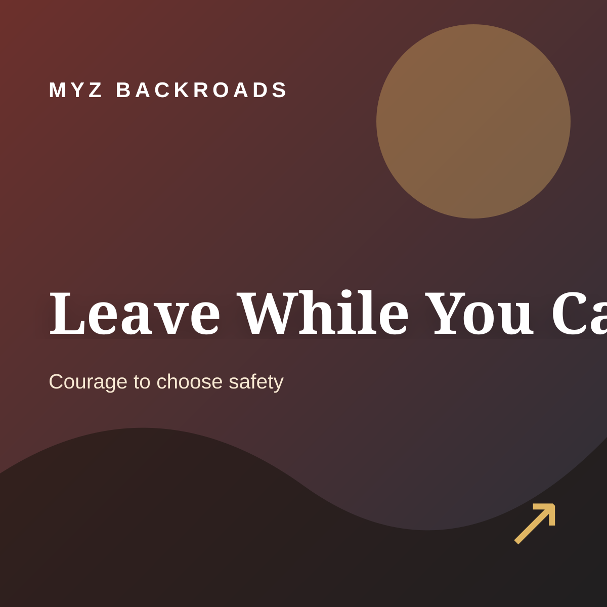
A direct, compassionate song about recognizing harm and finding the courage to walk away.
Videos
Music videos, lyric videos, shorts, and behind-the-scenes moments.
Gallery
These placeholders are ready for your own photos—music sessions, coffee-shop workdays, horses, country roads, and the real history behind MyZ Backroads.
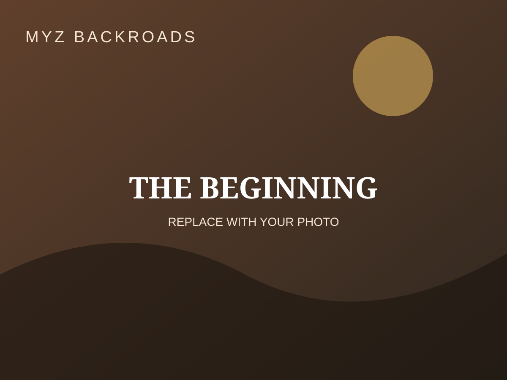
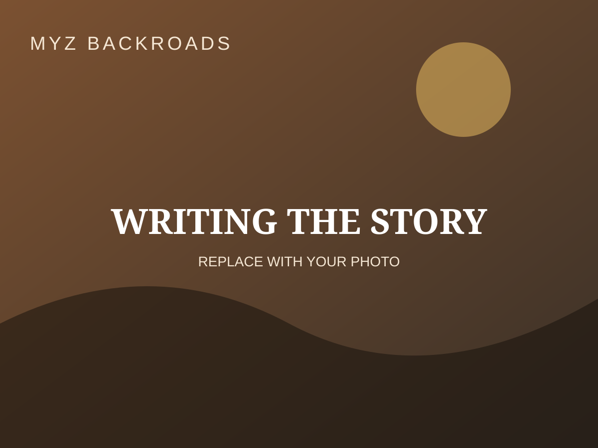

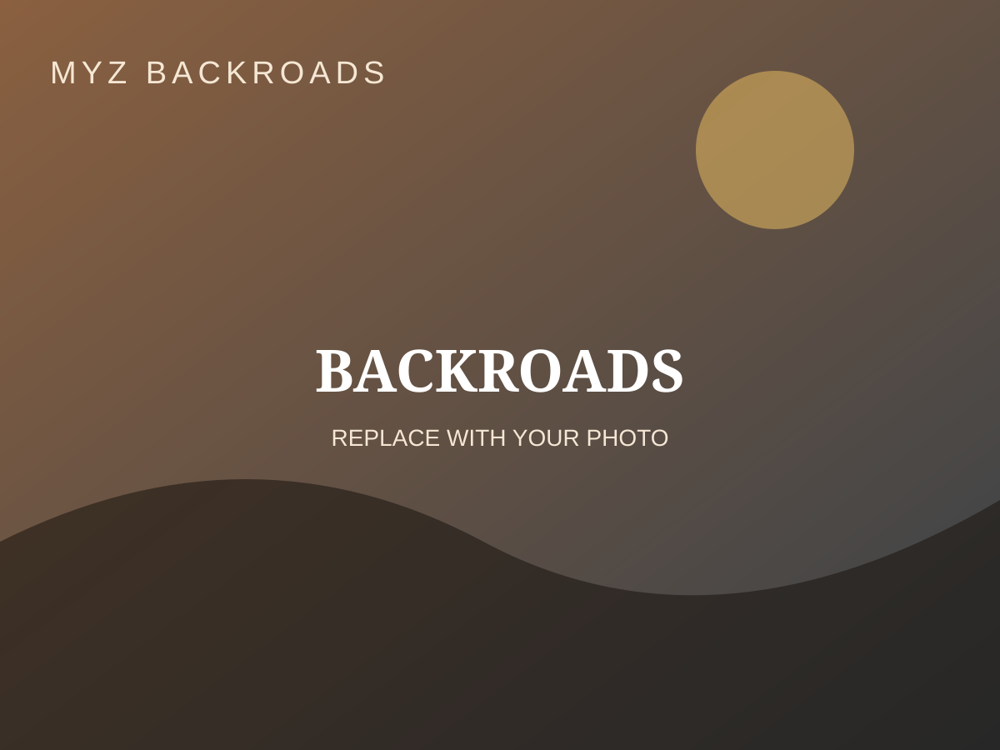

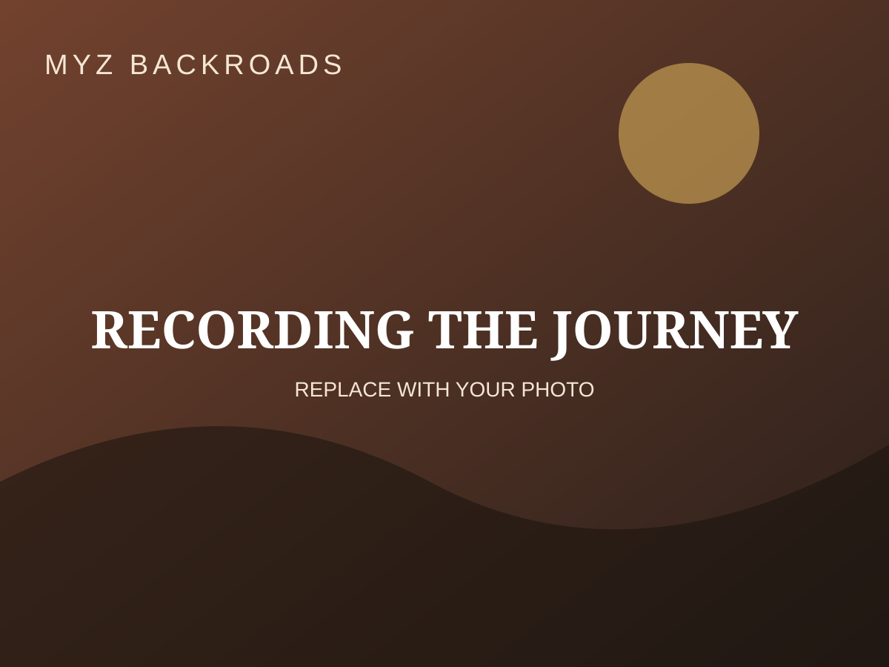
“Some songs entertain you. Others remind you that you made it through.”
Contact
For music, interviews, collaborations, appearances, or booking inquiries, contact Michael directly.
Email Michael